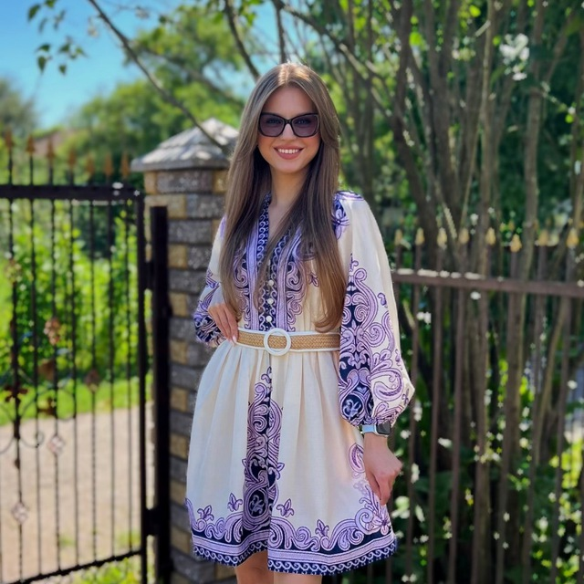
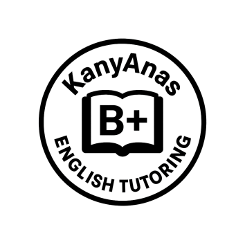

Анфіса Крамаренко

Teacher Trainer
Senior Teacher
General English
Business English
Exam preparation: IELTS, B2 First, C1 Advanced, C2 Proficiency
International Speaking Examiner
Освіта
- Запорізький національний університет (Магістр філології: викладач англійської мови, перекладач)
- Запорізький національний університет (Бакалавр філології: перекладач англійської мови)
Кваліфікації
- CELTA (Certificate in English Language Teaching to Adults)
- C1 Advanced
- C2 Proficiency
- IELTS (International English Language Testing System)
- Participation in professional development and teacher training events


